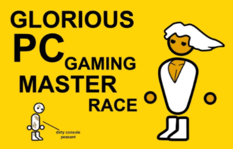
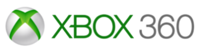
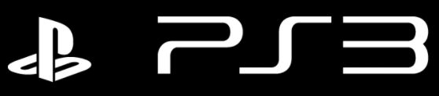
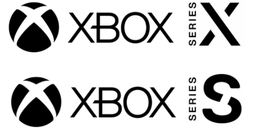
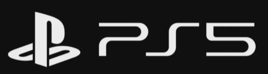
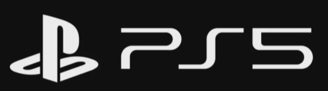

Donde se puede Jugar Y donde se consigue
COUNTER STRIKE GLOBAL OFENSIVE
Este juego la forma de jugarlo hoy en día es en un pc ya que el juego salio en 2012, han seguido actualizando el juego en pc pero no se puede decir lo mismo de las consolas en las que salio (Xbox360/xbox one y ps3)aunque decir que aun se puede jugar en las consolas y es bastante divertido sobre todo en la xbox one ya que es la consola mas actual en la que se puede jugar este juego.
La plataforma de venta en pc es steam y en consola las tiendas virtuales respectiva de cada consola.


RAINBOW SIX SIEGE
Este juego sigue con soporte y también va ser lanzado en las nuevas consolas (xbox series S/X y ps5) aparte de la generación ya pasada (xbox one normal/S/X y ps2 normal/pro) y claro en pc.
La plataforma de venta en pc es steam y uplay en consola las tiendas virtuales respectiva de cada consola.
 

CALL OF DUTY MODERN WARFARE (2019)
Al ser el juego de una saga con lanzamientos anual ya no recibe re lanzamientos en nuevas consolas por lo que esta disponible en pc y las consolas de anterior generación.
La plataforma de venta en pc es battle.net y en consola las tiendas virtuales respectiva de cada consola.
ROCKET LEAGUE
El juego esta disponible en pc y en las consolas de anterior generación incluyendo nintendo swicht, de momento no han dicho nada sobre si saldrá en la generación actual.
La plataforma de venta en pc es epicgames y en consola las tiendas virtuales respectiva de cada consola.

MORTAL KOMBAT 11
Disponible en consolas de anterior generación y actual ,pc y swicht .
La plataforma de venta en pc es steam y en consola las tiendas virtuales respectiva de cada consola.
FORZA HORIZON 4
El juego es exclusivo del ecosistema de microsoft xbox por lo que esta disponible en las consolas de xbox one en adelante.
La plataforma de venta en pc es microsoft store de win10 y en consola las tiendas virtuales respectiva de cada consola